Dominic Halsmer’s love for science and engineering began from the time he was a child playing at the small airport his father and uncles owned. He and his siblings would work on projects to defy gravity, once even successfully building a kite large enough to lift a person off the ground using an old parachute and rope. This natural curiosity eventually blossomed into the work he does today.
Dominic went on to earn his B.S. and M.S. degrees in Aeronautical and Astronautical Engineering from Purdue University, and his Ph.D. in Mechanical Engineering from UCLA in 1992. College was a time of spiritual searching, but ultimately he returned to his faith. “The love and Christ-like example of my parents made the difference,” he said. He also notes that the evidence from science for the truth of the Christian worldview also helped draw him back to his faith. Today, he has a heart for reaching out with the gospel to skeptical scientists and engineers.
Dominic joined the Engineering and Physics Department at Oral Roberts University shortly after graduating from UCLA. His interest in flight continues, including participation in the NASA/ASEE Summer Faculty Fellowship Program at NASA Goddard Space Flight Center, and working with undergraduates to test the stability of spinning aircraft under thrust. His current research focuses on studying how the universe is engineered to reveal the glory of God and accomplish His purposes. In 2013 he earned his M.A. degree in Biblical Literature from Oral Roberts University. Dominic is married to his high school sweetheart Kate, and they are the parents of four children. From 2007 to 2012, he served as Dean of the College of Science and Engineering at ORU, and he now directs the ORU Center for Faith and Learning.
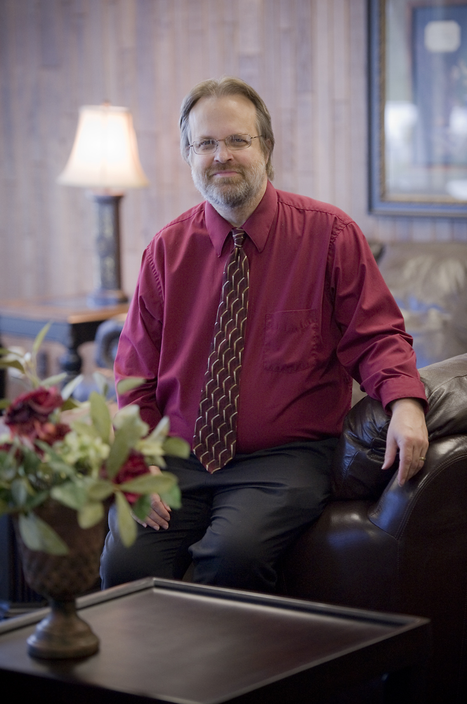
Mark Hall is the Dean of the College of Arts and Cultural Studies at Oral Roberts University, where he currently teaches courses on the intersection of science and the humanities, including Science and the Imagination and C. S. Lewis and the Inklings, as well as other courses in literature. He was recently co-organizer of the ”When Worlds Collide” conference on science and science fiction featuring plenary speakers Paul Davies and Joan Slonczewski.
Mark Hall’s extensive list of degrees include a B.S.E. in English Education, an M.S.E. in English, and a Specialist degree in Higher Education with an emphasis in English, all from the University of Central Missouri. He has also completed three Masters’ degrees from Oral Roberts University including an M.A. in Biblical Literature, an M.A. in Theological and Historical Studies, and an M.A. in Biblical Literature (Advanced Languages concentration). Mark received his Ph.D. in English from the University of Tulsa.
Mark is an ordained minister and a former church pastor. He has been married for over 22 years to his wife, Rachel, who is the Music Director at Jenks United Methodist Church. Dr. Hall and his wife have two children, Jonathan and Kathryne. Mark is active in his community through politics and the theater and is an avid reader, with one of his favorite authors being C. S. Lewis.
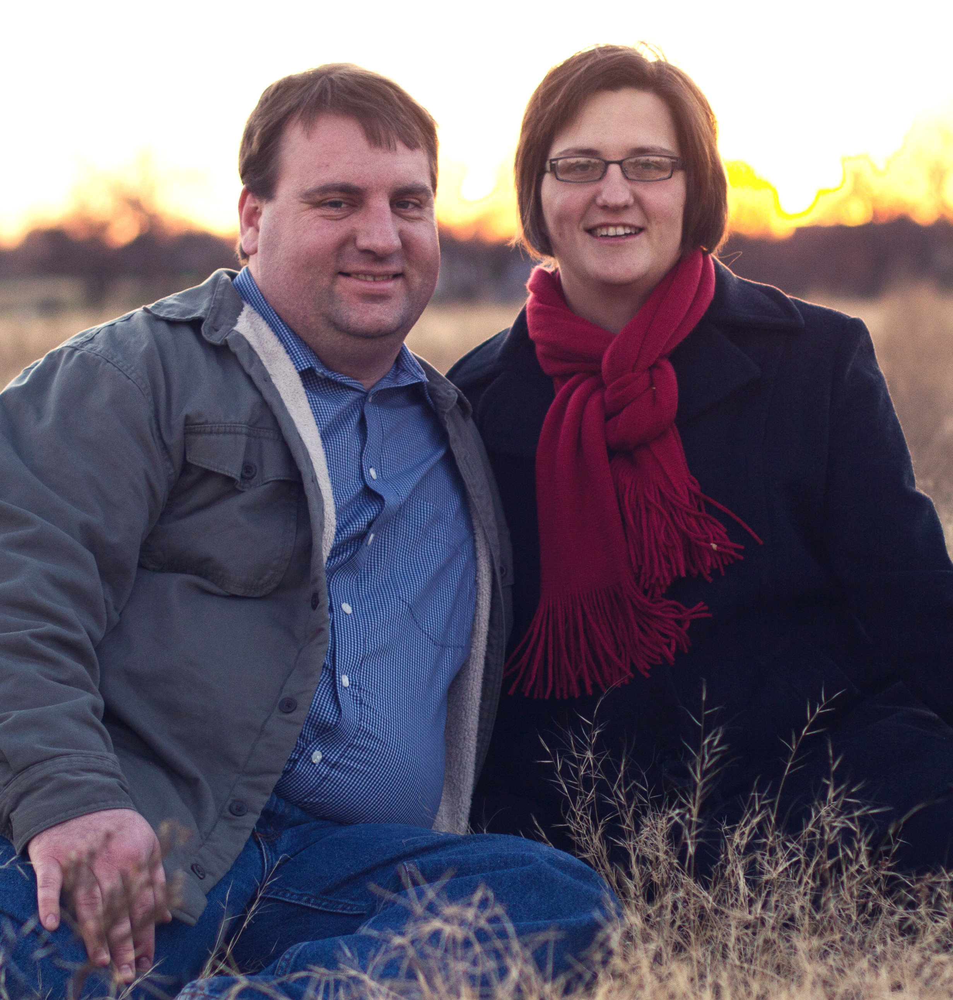
Jonathan Bartlett is the Director of The Blyth Institute in Tulsa, Oklahoma. The Blyth Institute is a non-profit research and education organization focusing on pioneering non-reductionistic approaches to biology. Jonathan’s research focuses on the origin of novelty—both the origin of biological novelty in adaptation as well as the origin of insight in the human creative process.
Jonathan’s other roles include managing a team of software developers as the Director of Technology at New Medio, tutoring homeschool students in chemistry and calculus at Classical Conversations, and being part of the Classical Conversations Writer’s Circle, where he has a monthly column discussing issues of science, faith, and education. Jonathan is the author of the book Programming from the Ground Up, which has been used in Universities from Princeton University to Oklahoma State for teaching undergraduate assembly language.
Jonathan received a B.S. in computer science and a B.A. in religion from Oklahoma Baptist University, and an M.T.S. from Phillips Theological Seminary. Jonathan and his wife, Christa, have had five boys—three living and two deceased. Jonathan spends his free time practicing Taekwondo with his boys, tending to his garden, and exploring bookstores with his wife.
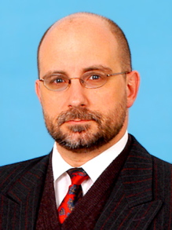
Alexander Sich is Associate Professor of Physics at Franciscan University of Steubenville. He holds a B.S. in Nuclear Engineering from Rensselaer Polytechnic Institute (with a minor in physics), an M.A. in Soviet Studies from Harvard University, an M.A. in Philosophy from Holy Apostles College & Seminary, and a Ph.D. in Nuclear Engineering from MIT. Professor Sich conducted his Ph.D. research in the Ukraine at the Chernobyl site and worked in the former Soviet Union in the nuclear safety and nonproliferation effort regarding weapons of mass destruction for over thirteen years. In addition to technical articles, Professor Sich has published opinion pieces on nuclear safety (including the Iranian Bushehr issue) in The Bulletin of the Atomic Scientists, The Boston Globe, The Wall Street Journal, The Diplomat, and Newsday. Professor Sich is married with seven children, speaks near native fluent Ukrainian and fluent Russian. His current research interests lie primarily in the philosophy of nature and in teaching.
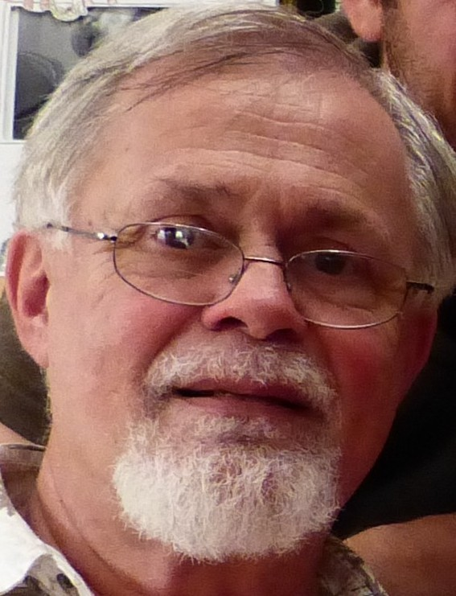
Arminius Mignea received his Engineer Diploma from the Polytechnic University of Bucharest, School of Computers. He worked as a software engineer and researcher at the Institute for Computing Technique for 14 years. Employed in the operating systems laboratory, he wrote system software in macro assembly language, Pascal, and C, and published some 12 research papers alone or as part of the team. After immigrating to the United States and settling in California’s Silicon Valley, he worked for numerous technology startups developing both server and front-end software for network, enterprise, and security management products. More recently he was involved in the specification, architecture design, and development of software systems for enterprise network traffic monitoring, software build management, and TV server systems. About ten years ago Arminius started being interested in the designs, architectures, and machinery of the biological systems. Arminius is fascinated with the beauty, intricacies, coordination, and incredible levels of organization in living things, and marvels at the skills of their architect.
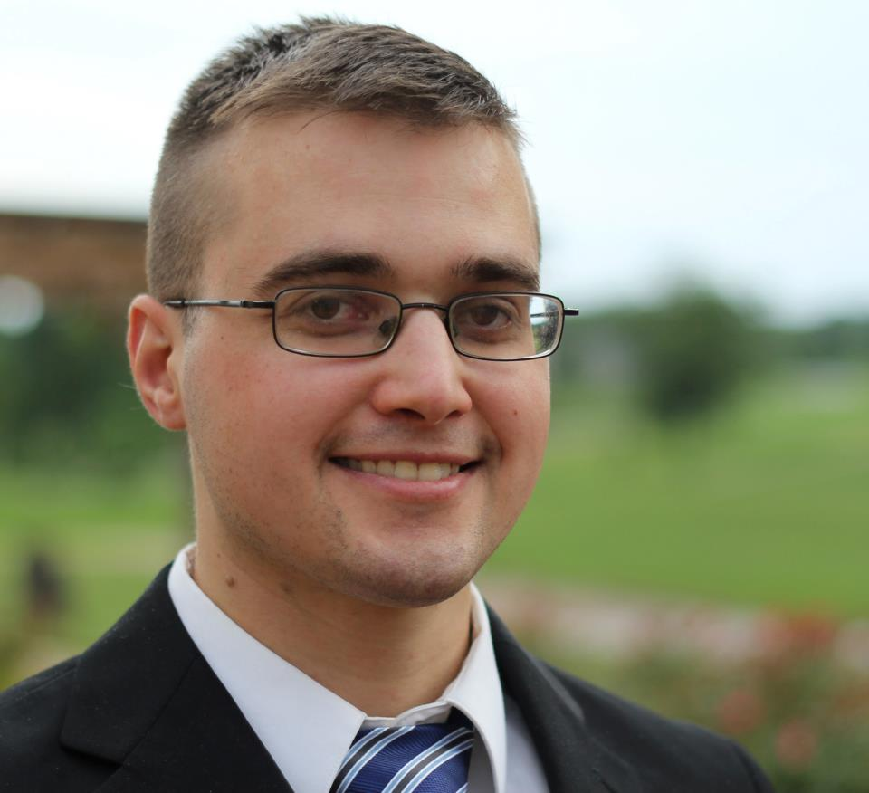
Mr. Holloway is currently an officer in the Air Force and has been on active duty for eight years (including a deployment to Afghanistan in 2010). He has a B.S. from Biola and an M.S. from the Air Force Institute of Technology, both in computer science. The M.S. was focused on Artificial Intelligence with an emphasis on evolutionary algorithms and was funded by an $80k grant from the Air Force Research Lab. The work was published in two conference proceedings, IEEE and ACM.
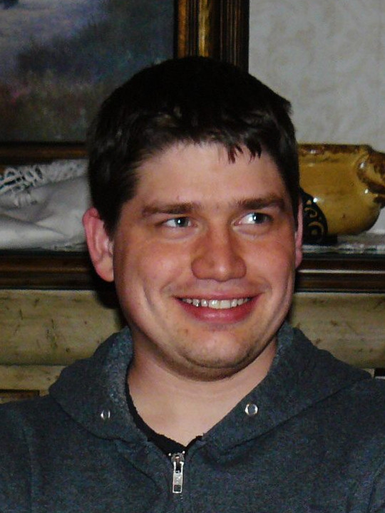
Winston Ewert hails from Canada where he earned a Bachelor’s degree in Computer Science from Trinity Western University. He continued his graduate career at Baylor University where he earned a master’s degree and is currently a Ph.D. candidate. At Baylor he is currently working for the Evolutionary Informatics Lab, with Robert J. Marks II and William Dembski, dedicated to understanding the role of information in evolution. He has a number of publications in the areas of search, conservation of information, artificial life, swarm intelligence, and evolutionary modelling.
Tyler Todd graduated from Oral Roberts University in 2009 with a degree in Engineering Physics. He currently works for Valmont Industries as a Manufacturing Engineer.
Nate Roman graduated from Oral Roberts University in 2009 with a B.S. in Engineering Physics. He currently works for Boeing as an Electrophysicist.
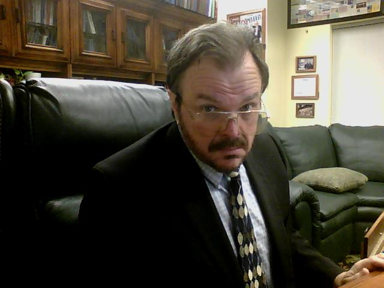
Robert J. Marks II is currently the Distinguished Professor of Electrical and Computer Engineering at Baylor University, Waco, TX. He is a Fellow of both IEEE and the Optical Society of America. He served for 17 years as the Faculty Advisor with the Campus Crusade for Christ, University of Washington chapter. His consulting activities include Microsoft Corporation, Pacific Gas & Electric, and Boeing Computer Services. Eleven of his papers have been republished in collections of seminal works. He is the author of Introduction to Shannon Sampling and Interpolation Theory (Springer-Verlag), Handbook of Fourier Analysis and Its Applications (Oxford University Press) and is a co-author of Neural Smithing (MIT Press). His research has been funded by organizations such as the National Science Foundation, General Electric, Southern California Edison, Electric Power Research Institute, the Air Force Office of Scientific Research, the Office of Naval Research, the Whitaker Foundation, Boeing Defense, the National Institutes of Health, The Jet Propulsion Laboratory, the Army Research Office, and the National Aeronautics and Space Administration (NASA). His Erdös-Bacon number is five.
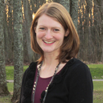
Rachelle was born and raised in rural Iowa and completed her undergraduate studies in psychology at Oral Roberts University (ORU). During her time at ORU, Rachelle participated in a research assistantship with Dr. Dominic Halsmer, an opportunity that produced conference presentations and ultimately a paper examining the concept of reverse engineering nature to discover intelligent design. Rachelle currently resides in Spirit Lake, IA, with her husband, Michael, and daughter, Emily.
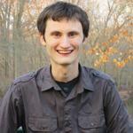
Michael Gewecke earned a Bachelor of Arts at Oral Roberts University, a private liberal arts college in Tulsa, OK where he studied Theological/Historical Studies. Most recently he received a Master of Divinity degree from Princeton Theological Seminary in Princeton, NJ. In addition to his academic theological study, Michael has been a technology consultant and online website designer for the last five years. Most recently, Michael served as the CEO of Worship Times, a website design and hosting company that is dedicated to serving small non-profit religious organizations across the United States. These integrative experiences of theology and technology lend towards Michael’s interest in the cross section between science and religion with particular emphasis upon their mutuality.
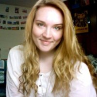
Jessica Fitzgerald is a student at Oral Roberts University pursuing a Bachelor of Science Degree in Engineering Physics with a minor in Mathematics. She plans to attend graduate school for physics or engineering, with a particular interest in nanoscience. Her strengths include data analysis, computation, and attention to detail.
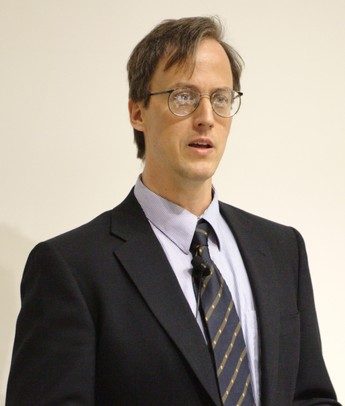
William A. Dembski received the B.A. degree in psychology, the M.S. degree in statistics, the Ph.D. degree in philosophy, and the Ph.D. degree in mathematics in 1988 from the University of Chicago, Chicago, IL, and the M.Div. degree from Princeton Theological Seminary, Princeton, NJ, in 1996. He was an Associate Research Professor with the Conceptual Foundations of Science, Baylor University, Waco, TX, where he also headed the first Intelligent Design think-tank at a major research university: The Michael Polanyi Center. He was the Carl F. H. Henry Professor in theology and science with The Southern Baptist Theological Seminary, Louisville, KY, where he founded its Center for Theology and Science. He has taught at Northwestern University, Evanston, IL; the University of Notre Dame, Notre Dame, IN; and the University of Dallas, Irving, TX. He has done postdoctoral work in mathematics with the Massachusetts Institute of Technology, Cambridge, in physics with the University of Chicago, and in computer science with Princeton University, Princeton, NJ. He is currently a Research Professor in philosophy with the Department of Philosophy, Southwestern Baptist Theological Seminary, Fort Worth, TX. He is currently also a Senior Fellow with the Center for Science and Culture, Discovery Institute, Seattle, WA. He has held National Science Foundation graduate and postdoctoral fellowships. He has published articles in mathematics, philosophy, and theology journals and is the author/editor of more than a dozen books.